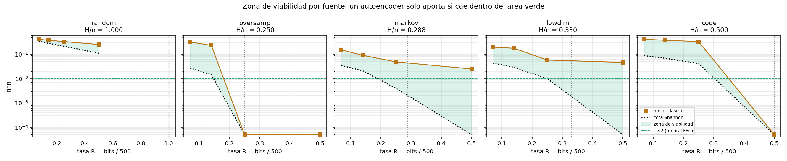
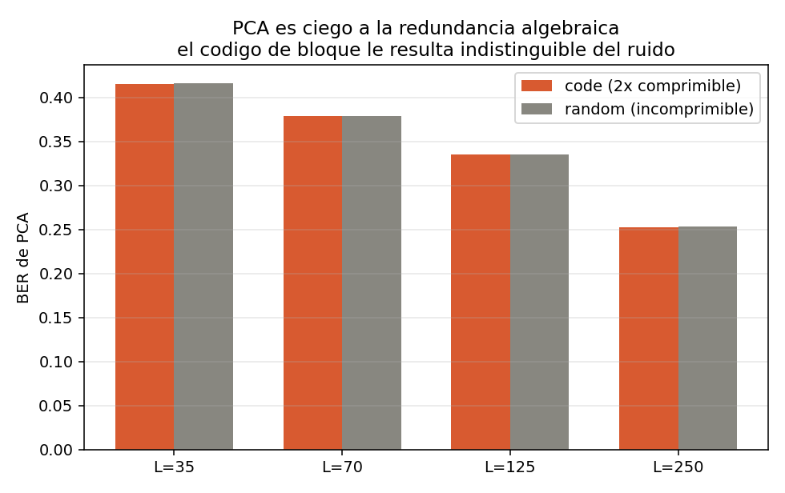

Vectores de 500 símbolos ±1 y un cuello de botella binario, contra los métodos clásicos que hacen ese trabajo hoy con el mismo presupuesto de bits.
Francisco Terán · Matemáticas Aplicadas y Ciencias de la Computación, USFQ · Prof. Henry Carvajal · septiembre de 2026 · cuaderno, código y datos
El cuantizador que lleva el modelo
El cuello es binario: cada dimensión del latente pasa por sign(), un cuantizador de un bit. L dimensiones son exactamente L bits, así que la tasa es contable por construcción.
sign() no tiene derivada útil. Straight-through: hacia adelante el signo, hacia atrás la identidad recortada a |u| ≤ 1, para que las unidades ya saturadas no sigan empujando.
Antes del signo, BatchNorm sin parámetros afines. Sin eso el latente se autodestruye, y el mecanismo está medido.
El cuantizador de la vara, y el ruido
El PCA no compite en dimensiones sino en bits: d componentes de b bits con d·b = L, cuantización uniforme sobre el rango de entrenamiento, b ∈ {1, 2, 4}, y se reporta la mejor. Sin cuantizar haría la misma trampa que un latente continuo.
Ruido de canal: no hay. El arnés final mide compresión sin AWGN. El intento de JSCC fue de v2 y quedó fuera; la razón, en la diapositiva de alcance.
Donde sí hay aleatoriedad: random, la fuente i.i.d. que sirve de control negativo, y el muestreo Bernoulli de la RBM en el preentrenamiento.
El encargo: 500 símbolos BPSK, un encoder que los comprima lo más posible, un decoder que recupere signos y posiciones, y una métrica de telecomunicaciones para decidir si es viable.
| versión | qué se hizo | qué dejó |
|---|---|---|
| v1 | primer arnés, latente continuo, MSE, CPU | la compresibilidad es de la señal, no del modelo |
| v2 | ablación continuo vs binario, primer JSCC | el latente continuo no comprime; se adopta el cuello binario |
| v3 | baselines clásicos, cotas de Shannon, oráculos | la vara y el piso como referencias obligatorias |
| v4 | arnés definitivo en H200: 5 fuentes × 3 modos × 4 tasas | el barrido principal, con calibración y 4 semillas |
| cierre | preentrenamiento fiel, control de arquitectura, umbral | los resultados que cambian la conclusión |
Dos conclusiones de los pilotos se revirtieron después, las dos con causa identificada. Están en la bitácora y las veremos cuando toquen.
Cada número que aparezca tiene fecha, semillas y hash del script que lo produjo. Si quiere ver de dónde sale alguno, el repositorio está abierto en otra pestaña.
Con un latente de 500 bits el autoencoder aprende la identidad y da BER = 0. No comprimió nada.
Cualquier afirmación de viabilidad tiene que ser un par (tasa, BER), y la tasa tiene que contarse en bits reales:
\[ R = \frac{\text{bits del latente}}{500} \]
Un latente de 50 dimensiones en float32 son 1600 bits. Más que la fuente. Por eso el cuello es binario, con estimador straight-through.
El piso es la cota inferior de Shannon para fuentes binarias con distorsión de Hamming. Nadie baja de ahí; violarla es un bug.
\[ D \;\ge\; H_b^{-1}\!\left(\frac{H(X)}{n} - R\right) \]
La vara es el mejor método clásico con el mismo número de bits: PCA cuantizado, decimación, oráculos. Si el autoencoder no le gana, no aporta.

Franja verde: donde un autoencoder podría aportar. Sin ella no hay nada que ganar.
BER: fracción de posiciones donde el signo reconstruido no coincide con el original. Es la métrica del campo, y hace aplicable la cota de Shannon con distorsión de Hamming sin traducción.
Un MSE sobre ±1 penalizaría magnitudes que al receptor no le importan: el decoder emite logits y solo cuenta el signo.
El umbral. Un BER previo a la decodificación del orden de 10⁻² es lo que un LDPC o un turbo llevan a esencialmente cero. Por debajo de 10⁻³, el enlace es usable sin FEC.
Para traducirlo a algo familiar: el BER de BPSK sin codificar en AWGN,
\[ \text{BER} = Q\!\left(\sqrt{2E_b/N_0}\right) \]
| BER | Eb/N0 equivalente |
|---|---|
| 10⁻¹ | −0.9 dB |
| 10⁻² | 4.3 dB |
| 10⁻³ | 6.8 dB |
Es una traducción de escala, no una simulación. El segundo indicador, BER por confianza, es el BER sobre el 90 % o el 50 % de bits con mayor |logit|: aproxima lo que vería un FEC de decisión blanda.
Todo lo que sigue mide fuente → encoder → L bits → decoder → reconstrucción, sin ruido en medio. La pregunta es de compresión, y con canal se mezclan dos efectos que hay que separar.
Lo que pasó cuando se metió el canal (v2, primer JSCC): las curvas de BER frente a Eb/N0 salieron planas. markov con 128 bits va de 0.1371 a 0.1234 entre −2 y 10 dB. El piso de distorsión de la compresión tapaba por completo el efecto del canal.
Lo que eso implica para leer estos resultados. Los BER de hoy son un piso: un canal solo puede añadir errores encima. Si un punto no es viable sin canal, no lo es con canal. La implicación contraria no vale: un punto viable aquí necesita un JSCC que lo confirme, reportando el exceso sobre este piso.
El JSCC sobre el mejor punto queda como extensión, con el protocolo ya corregido por el fallo de v2.
Cinco fuentes, elegidas para cubrir tipos distintos de redundancia, cada una con entropía exacta y un oráculo que demuestra que su redundancia es explotable.
| fuente | estructura | H (bits) | compresión máx. |
|---|---|---|---|
random | ninguna, i.i.d. | 500.0 | 1.00× |
code | algebraica: paridades XOR de grado 3 | 250.0 | 2.00× |
lowdim | geométrica: sign(Wz), z ∈ ℝ³² | 164.9 | 3.03× |
markov | correlacional: cadena con p = 0.05 | 143.9 | 3.47× |
oversamp | repetición: 125 símbolos × 4 | 125.0 | 4.00× |
random es el control negativo: cualquier método que parezca comprimirlo tiene una fuga. La entropía de lowdim sale del conteo de dicotomías de Cover, no de la dimensión del manifold.
Cuatro escalones: 35, 70, 125 y 250 bits. BER mínimo teórico en cada uno:
| L = 35 | L = 70 | L = 125 | L = 250 | |
|---|---|---|---|---|
random | 0.3455 | 0.2834 | 0.2145 | 0.1100 |
code | 0.0881 | 0.0684 | 0.0417 | 0 |
lowdim | 0.0439 | 0.0291 | 0.0099 | 0 |
markov | 0.0348 | 0.0211 | 0.0040 | 0 |
oversamp | 0.0272 | 0.0146 | 0 | 0 |
En verde, donde la compresión sin pérdida es teóricamente posible. L = 250 pregunta ¿alcanza el óptimo?; los escalones bajos miden qué tan grácil es la degradación.
direct: un autoencoder independiente por escalón. Es el control: lo mejor alcanzable a cada tasa sin ninguna restricción.
nested: un solo encoder produce 250 bits; para el escalón L se anulan los posteriores y el decoder reconstruye desde el prefijo. Los cuatro escalones se optimizan en el mismo paso.
stacked: cascada de compresores binarios 500 → 250 → 125 → 70 → 35, cada etapa comprimiendo el código de la anterior, con ajuste fino al final.
Anidar es refinamiento sucesivo (Equitz y Cover, 1991): en telecomunicaciones, un códec compatible en tasa. Si el enlace se degrada, se envían menos bits y el mismo decoder sigue funcionando.
Advertencia registrada antes de medir: la teoría dice que anidar puede costar rendimiento frente a un modelo dedicado. Por eso nested se compara contra direct en vez de suponer que es gratis.
| barrido v4 | cierre (preentrenamiento, control de arquitectura, umbral) | |
|---|---|---|
| fuentes | las cinco | lowdim, markov, code |
| modelo | MLP 1536 de ancho × 4 de profundidad | escalera estrecha 500 → 250 → 125 → 70 → 35 |
| cuello | binario, straight-through, BatchNorm sin afín antes del signo | |
| datos | 400 000 entrenamiento, 50 000 prueba | 400 000 entrenamiento, 20 000 validación, 20 000 prueba |
| pasos | 300 épocas con batch 4096, unos 29 300 pasos | 30 000 de ajuste fino; preentrenamiento: 10 000 por etapa |
| optimizador | AdamW, lr 3·10⁻³, decaimiento 10⁻⁴, OneCycle | AdamW, lr 10⁻³, decaimiento 10⁻⁴, OneCycle |
| checkpoint | el de la última época | el mejor sobre validación; el BER reportado es de prueba |
| repeticiones | 4 semillas, que varían fuente e inicialización | |
| hardware | H200, bf16 con autocast, TF32, datos residentes en GPU | |
La asimetría en la fila de checkpoint es real y es la razón de que los números del barrido y los del cierre no se comparen a ojo: el control de arquitectura se corrió con protocolo idéntico en los dos brazos, precisamente para poder compararlos.
La primera corrida completa dio BER 0.5000 sobre oversamp con 250 bits para una fuente de 125 bits de entropía. Un resultado imposible: al autoencoder le sobraba el doble de capacidad.
El test de calibración. Antes de creerle al arnés, entrenar ese caso y exigir BER ≈ 0. Es pesar un patrón de 1 kg antes de creerle a la balanza: si marca 0.5 kg, no cambió la gravedad.
La hipótesis inicial, saturación de la tanh, resultó falsa. El fallo real era una inestabilidad de escala del latente binario, y la veremos con su mecanismo en la parte de método.
Controles automáticos que corren antes de interpretar cualquier tabla:
random no comprime en ningún escalónrandom, la brecha entrenamiento/prueba es positivaTodo BER de autoencoder se reporta sobre 4 semillas; desviaciones típicas entre 0.0003 y 0.0010 en las fuentes con estructura, 0.0066 sobre random, que es el control de ruido.
MLP de 1536 × 4, cuello binario. Seis configuraciones ganan a la vara en 4 de 4 semillas:
| fuente | modo | L | autoencoder | vara | margen | significancia |
|---|---|---|---|---|---|---|
lowdim | direct | 70 | 0.1051 ± 0.0004 | 0.1861 | +0.0810 | 216 σ |
lowdim | nested | 70 | 0.1241 ± 0.0005 | 0.1861 | +0.0620 | 123 σ |
markov | direct | 35 | 0.1498 ± 0.0003 | 0.1531 | +0.0033 | 10 σ |
lowdim | direct | 35 | 0.1870 ± 0.0010 | 0.1954 | +0.0084 | 9 σ |
markov | nested | 35 | 0.1485 ± 0.0006 | 0.1531 | +0.0046 | 8 σ |
markov | direct | 70 | 0.0902 ± 0.0003 | 0.0914 | +0.0012 | 4 σ |
Solo con R ≤ 0.14 y solo sobre estructura geométrica o correlacional. En R ≥ 0.25, con esta arquitectura, no gana en ninguna fuente.
Escalera estrecha 500 → 250 → 125 → 70 → 35 contra el MLP ancho, mismo protocolo: pasos, tasa de aprendizaje y selección de checkpoint por validación. Cuatro semillas.
| caso | vara | MLP ancho | escalera | quién gana a la vara |
|---|---|---|---|---|
markov L=35 | 0.1531 | 0.1564 | 0.1979 | ninguno con este protocolo |
markov L=125 | 0.0488 | 0.0614 | 0.0464 | escalera |
markov L=250 | 0.0250 | 0.0288 | 0.0135 | escalera, por 46 % |
lowdim L=250 | 0.0492 | 0.0553 | 0.0386 | escalera |
El signo se invierte con la tasa: el ancho gana comprimiendo agresivo, la escalera gana con holgura. Y la escalera es estable en 16 de 16 corridas; el ancho se degrada hasta 0.009 tras su pico.
| caso | aleatoria | pre. AE | pre. RBM | vara |
|---|---|---|---|---|
lowdim L=35 | 0.2610 | 0.1833 | 0.1911 | 0.1954 |
lowdim L=70 | 0.1376 | 0.1140 | 0.1146 | 0.1861 |
lowdim L=125 | 0.0854 | 0.0720 | 0.0710 | 0.0610 |
lowdim L=250 | 0.0386 | 0.0394 | 0.0369 | 0.0492 |
markov L=35 | 0.1979 | 0.1418 | 0.1732 | 0.1531 |
markov L=70 | 0.1010 | 0.0838 | 0.0891 | 0.0914 |
markov L=125 | 0.0464 | 0.0456 | 0.0441 | 0.0488 |
markov L=250 | 0.0135 | 0.0143 | 0.0107 | 0.0250 |
Las ocho celdas de lowdim y markov, 4 semillas cada una, sin seleccionar. En ámbar, donde el brazo AE pierde contra la inicialización aleatoria. En lowdim L=125 la vara gana a los tres brazos. Sobre code, los tres quedan al nivel de ruido.
RBM con divergencia contrastiva y decoder Wᵀ, o autoencoder superficial, capa a capa sobre la escalera. Predicción registrada antes de correr: no ayudaría.
El mejor de los dos preentrenamientos gana a la inicialización aleatoria en 8 de 8 celdas, con mejoras del 4.4 % al 29.8 %.
No son equivalentes: el AE gana a tasas bajas y pierde en los dos L=250, donde gana la RBM. El objetivo de la etapa importa, y en dirección opuesta según la tasa.
Los brazos preentrenados reciben 40 000 pasos más que el control; el experimento con cómputo igualado está pendiente.
markov, 250 bits, escalera con preentrenamiento RBM, cuatro semillas
El umbral corregible por FEC es 10⁻². Con BER total no cruza, por siete diezmilésimas. Con salida blanda cruza por un orden de magnitud: el 10 % de bits restante tiene BER ≈ 0.097 y viene marcado como dudoso por su propio LLR.
Lo que demuestra: una estructura de confianza favorable a decodificación blanda. Lo que no demuestra: el BER tras un LDPC real. Esa simulación queda como extensión.
code es 2× comprimible sin pérdida, y un oráculo que conoce la matriz de paridad lo demuestra. El autoencoder recorre el 21 % del camino:
| estrategia a L = 250 | BER |
|---|---|
| copiar la mitad, adivinar el resto | 0.2500 |
| autoencoder | 0.1982 |
| oráculo | 0.0000 |
Medido contra su propia cota, queda más lejos del óptimo sobre la fuente comprimible (+0.198) que sobre ruido puro (+0.148).

PCA es igual de ciego: diferencia dentro de 1σ sobre 10 semillas. Y el cociente BER/BER-top90 es 1.0: los errores están repartidos uniformemente, ni un FEC blando ayudaría.
La hipótesis inicial: el descenso de gradiente no aprende XOR de grado 3. Se construyó un diagnóstico para demostrarla, y la refutó.
| grado del XOR | exactitud de test, 500 bits de entrada |
|---|---|
| 1 | 1.0000 |
| 2 | 1.0000 |
| 3 | 1.0000 |
| 4 | 0.4995 |
Con supervisión directa un MLP aprende el grado 3 perfectamente. Lo que falla en el autoencoder es que la pérdida de reconstrucción no genera un camino de gradiente hacia 250 funciones de paridad simultáneas. El obstáculo es el objetivo, no la capacidad.
Un piloto con 60 000 muestras y 25 épocas había dado 0.5069 en grado 3: azar. Con ocho veces más pasos, 1.0000. Un negativo con presupuesto corto es indistinguible de uno real.
Con sign() hacia adelante, escalar las preactivaciones no cambia la salida: la pérdida es ciega a la escala. Hacia atrás no lo es. Los pesos crecen sin castigo mientras matan su propio gradiente.
Un modelo llegó a BER 0.0003 en la época 60 y estaba en 0.4725 en la 150, con el 47 % de los bits muertos.
| normalización antes del signo | pre_max | BER final |
|---|---|---|
| BatchNorm sin afín | 3.8 | 0.0000 |
| LayerNorm sin afín | 13.3 | 0.0640 |
| tanh | 16.9 | 0.1706 |
| LayerNorm con afín | 28.6 | 0.1167 |
La magnitud de las preactivaciones correlaciona con el BER final, aunque no de forma estrictamente monótona: LayerNorm con afín tiene el pre_max más alto y no el peor BER. BatchNorm normaliza cada bit por separado sobre el batch: realimentación negativa por dimensión.
Entropía del latente medida con un modelo autoregresivo, verificada contra la cota de Fano. Cuando sobran bits, el autoencoder los desperdicia; cuando faltan, el latente es casi incompresible.
| fuente | L | L / Hfuente | redundancia del latente |
|---|---|---|---|
oversamp | 250 | 2.00 | 36.1 % |
markov | 250 | 1.74 | 33.8 % |
markov | 70 | 0.49 | 16.3 % |
lowdim | 70 | 0.42 | 3.6 % |
lowdim | 35 | 0.21 | 1.0 % |
A tasas bajas, donde el autoencoder gana, no hay nada que ganar por codificación entrópica. La tasa nominal es honesta justo donde importa.
| se predijo | salió |
|---|---|
| la tanh se satura y mata el gradiente | saturación bajo el 5 %; el fallo era la escala |
| SGD no aprende XOR de grado 3 | exactitud 1.0000 con datos suficientes |
| más datos mejoran un 14.5 % | eran más pasos, no más datos; saturado desde 400k |
la convolución no cambia nada en lowdim | empeora un 21 %: sin localidad, pierde mezcla global |
| el preentrenamiento por capas no ayuda | el mejor brazo gana en 8 de 8 celdas |
| ajuste fino con tasa pequeña conserva el pico | 74 % peor por subentrenamiento |
Y tres conclusiones ya escritas se revisaron: la frontera en R ≈ 0.25, la etiqueta «receta de Hinton» sobre el modo apilado, y una victoria de 4σ que resultó sensible al protocolo.
No son viables a tasas agresivas. Con el umbral de 10⁻², 18 de 20 puntos del barrido principal quedan fuera. Su mejor punto, 0.0344, equivale a BPSK sin codificar a 2.2 dB; el mejor del cierre, 0.0107, a 4.2 dB, una décima por debajo del umbral.
Compatibles con decodificación blanda en una franja estrecha. markov a 250 bits, escalera y RBM: 0.0107 total, 0.0011 en el 90 % más confiable. El BER tras un decodificador real queda por medir.
Y superan a los métodos clásicos en casi todo el mapa de markov y lowdim si la arquitectura se elige por tasa: ancho para comprimir agresivo, escalera con holgura. Sobre redundancia algebraica fracasan, por el objetivo y no por la capacidad.
code es el objetivo, cámbiese el objetivo. Es la extensión más valiosa.markov L=250. Convierte «favorable a decisión blanda» en una cifra operativa.Y un control pendiente: cómputo igualado para el preentrenamiento. La brecha del 28 % no se explica con 40 000 pasos de capas de dos segundos, pero es una hipótesis, no una medida.
Cotas y baselines en segundos sin GPU; barrido de autoencoders con calibración obligatoria y reanudación. Cada número del cuaderno tiene fecha, semillas, versiones y hash del script que lo produjo.
Cuaderno del proyecto · Bitácora completa · Preguntas abiertas